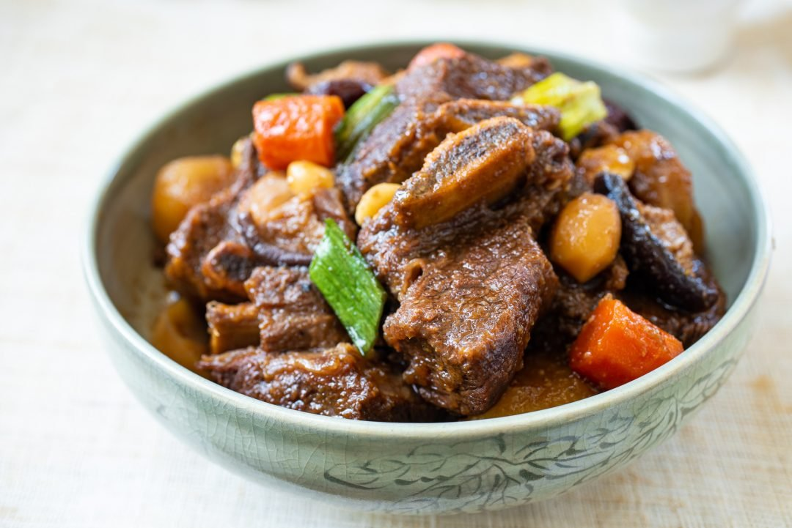

Galbi-Jjim

Ingredients
As the Galbi Jjim simmers and reduces, the savory aroma permeates through the house, and everyone slowly starts to lose their focus.
- 800-900 grams Beef Short Ribs
- handful of Korean Radish
- 1 whole Carrot
- 3 stalks Spring Onion Each, forearm-sized piece
- 5 Shiitake Mushrooms
- 1 cup Water